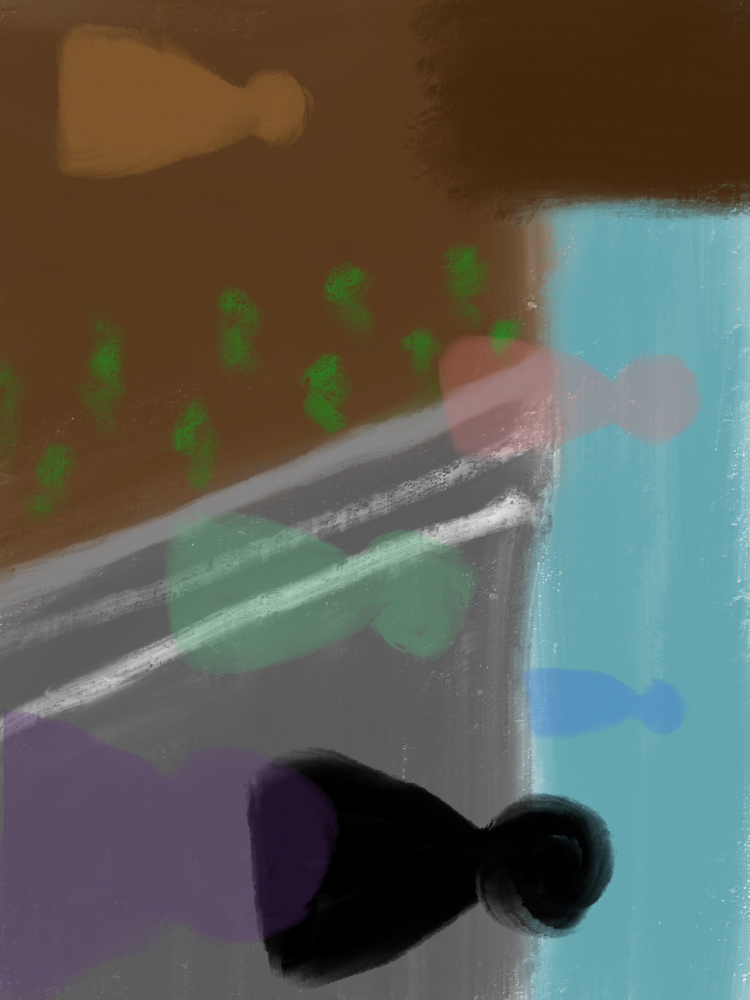

 "Shortly before doing my creative project for this class, I broke my right arm. I was planning on making a painting, but I realized that I wouldn't be able to make it work, and switched to a digital piece instead.
The idea behind this piece was a reflection on the class project, and the impact that it had on me and the community. Planting on University Drive really made me think about how even though in the future I would no longer be on campus, a part of me would still always be there.
The black figure represents someone on campus in the future, looking at the project site. The other translucent figures are me and my classmates who worked on the project. Even when we are off in other places, a ghost of us will still be there, making campus more beautiful for future students. Whenever someone is on that part of campus, some part of me have an impact on them."